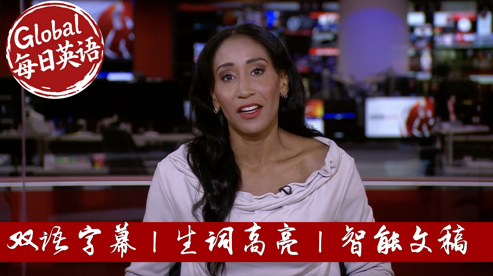

【【实时｜生词双高亮】BBC News 20250915 英国大使任命深陷爱泼斯坦丑闻！加沙空袭升级致50死｜艾美奖红毯今夜开启】
Summary: BBC News Bulletin: Mandelson's US Ambassadorship Under Fire, Gaza Offensive Intensifies, and Emmy Awards Preparations
摘要： 英国政府因任命与爱泼斯坦有关联的曼德尔森为驻美大使遭受强烈批评。以色列军队加强对加沙城的空袭，导致数十人死亡。电视界盛事艾美奖即将在洛杉矶举行，英国剧集《青春期》入围多个奖项。

⏱️ Estimated Reading Time: 40 min.
📚 四级生词 📚 六级生词 📚 雅思生词 📚 托福生词 📚 专八生词 📚 SAT生词 📚 考研生词 📚 GRE生词
Live from London, this is BBC News.
Virginia Jafrae's family tells the BBC the British government was wrong to appoint Peter Mandelson as US ambassador because of his ties to Jeffrey Epstein.
So absolutely not, he should not have been given the position in the first place.
Israeli forces are ramping up their assault on Gaza City with a wave of heavy air strikes on high-rise buildings.
Keir Starmer condemns violence by protesters and says Britain will never surrender its flag to those who use it as a symbol of division.
Tributes are paid to former boxing world champion Ricky Hatton who's died at the age of 46.
And rolling out the red carpets for some of the biggest names in television, Los Angeles gets ready to host the Emmys.
Hello, I'm Adina Campbell.
The family of Virginia Jafrae who became the most outspoken critic of the abuse by Peter Fyre Jeffery Epstein has told the BBC that Lord Mandelson should never have been given the position of UK ambassador to the US.
Virginia Jafrae took her own life earlier this year.
Her brother has now said Lord Mandelson's appointment reflected how deep corruption goes in both the US and the UK.
This morning the business secretary said the tip of the government had known at the time of the appointment, what it knows now, it was highly unlikely he would have been given the post.
Lord Mandelson says he regrets his friendship with Jeffrey Epstein and had never met Virginia Jafrae.
Here's our political correspondent, George Roberts.
The ramifications of Peter Mandelson's appointment as the UK's ambassador to the US and his association with Jeffrey Epstein continue to haunt Downing Street.
Today the family of one of Jeffrey Epstein's most well-known victims, the late Virginia Jafrae, spoke out.
Absolutely not, he should not have been given the position in the first place, it speaks to how deep a corruption is in our systems.
There is no suggestion that Lord Mandelson ever met Virginia Jafrae or was introduced to any women by Jeffrey Epstein.
He did not wish to comment on the family's words today, but has recently reflected on the nature of his relationship with Epstein.
He also has said that he regrets relying on assurances from Epstein's lawyers about his innocence.
The business secretary said this morning that the government believed the benefits of appointing a man of Lord Mandelson's talent and experience outweighed the risks at the time.
But he was asked if he now believed the appointment had been a mistake.
Retrospectively if we had known the information we know now, it is highly unlikely that he would have been appointed, because what we know now is materially different than what we understood at the time.
He also defended the Prime Minister for backing Lord Mandelson in the Commons on Wednesday.
The ambassador has repeatedly expressed his deep regret for his association with him.
He is right to do so.
I have confidence in him.
This despite the fact that Downing Street had knowledge of the additional information contained in a series of emails at the time, or they're not the full picture.
There will always be people who don't meet the standards that we set.
Care acts decisively.
He has raised the standards.
That's something I'm proud of.
But of course when people let us down, I mean people like me and others, of course we feel it.
But those criticisms of Care Starmer's judgement and leadership within his own labour ranks have been mounting.
I think he can continue, but he has a lot of proving to the public to show that he is up to the job.
The Conservatives intend to keep the pressure up.
We will use every mechanism that is available to us to force the truth to come out.
We need these documents.
We need to understand what advice went to the Prime Minister and when, who made these decisions, how have we ended up in a situation where the advice for the Prime Minister is to appoint the best pal of a convicted pedophile to be US ambassador?
The government's troubles over there seem far from over.
And that was our political correspondent, Georgia Roberts, while the interview with the junior Dufreis brother and sister-in-law included comments on allegations of abuse involving Prince Andrew.
Here's our culture reporter, Noranji.
The Epstein scandal is much wider than British politics.
It also claimed the reputation of a member of the Royal Family, Prince Andrew.
He was also accused of sexual abuse by Virginia Dufreis.
Prince Andrew has denied all of the claims against him.
In 2022, he reached an out-of-court settlement with Virginia Dufreis, which has reportedly ran into millions of dollars, but which contained no admission of liability or apology.
Now Virginia Dufreis took her own life earlier this year, leaving many questions on answer.
Today her family, as we've been hearing, has been speaking up.
And they said the fact that Prince Andrew remains out there, living in a royal property is not enough.
It doesn't matter if it's a royal family member, or a president, or a prince, or a large baking institution, or a lawyer.
Every single person deserves to be held to the fullest extent of the law.
And I don't feel personally like they've done that.
While this whole issue remains a huge problem for the royal family, Prince Andrew stepped back from all official public roles in the wake of it.
His reputation has never recovered.
Now Virginia Dufreis has a posthumous book out later this year.
Her family has vowed to continue her fight, saying they will not stop until they get justice.
We have put all of this to Prince Andrew's representatives today.
We have not heard back.
Nornangie reporting.
To the Middle East next, and Palestinian medical sources reports that more than 50 people have been killed by the Israeli military in Gaza since dawn on Sunday.
Israeli air strikes are continuing to destroy homes in Gaza City, as it tries to force the population's southwards.
Three high-rise buildings have been bombed today.
That includes the Mohana multi-story building, which was sheltering displaced Palestinians.
The Israeli army also struck the Al-Qa'fah tower, a residential block in Al-Rimal neighborhood.
Israel says it is targeting Hamas surveillance centres but hasn't provided evidence.
The UN Agency for Palinzili in Refugee says thousands of people displaced from Gaza City and Jabalya, and are residing in overcrowded shelters and makeshift tents without access to clean water and sanitation.
With more on that and the latest violence in Gaza, here's our correspondent Injury Salam Wuridavis.
Well, with the peace process, Moribund and ceasefire talks going nowhere, the IDF, the Israeli military has stepped up its military offensive, particularly on Gaza City itself.
There have been many more airstrikes over the last 24 hours.
Israel says it has destroyed at least two high-rise buildings in Gaza City, which it accuses Hamas of having used as command and control centres, specifically intelligence gathering centres.
In many cases, Israel has just given warnings of a couple of hours before those buildings were blown up, telling residents not only to evacuate, but to move further south to what it's calling safe humanitarian zones, particularly around Amawasi in southern Gaza.
Israel says now that 300,000 people have left Gaza City, but the United Nations quoted in some media reports, is saying that in many cases people are turning around again and heading back north because the aid and the food, and in particular the shelter that Israel has promised it's going to supply in these areas, is simply non-existent, and according to the UN, nowhere in Gaza can be considered safe.
There's been a lot of international criticism, of course, and appeals for Israel to stop its military offensive in Gaza, but also from some Israelis themselves, particularly the families and the supporters of the hostages.
There was a big rally in Tel Aviv in the last 24 hours, at which families of the hostages said that the continued military activity in Gaza, and particular that Israeli military attack on hermastly, this in Qatar last week, has basically quashed any hopes they have of the hostages being released anytime soon.
We're a Davis in Jerusalem.
Meanwhile, US Secretary of State Marco Rubio has restated his concern at Israel's attack on Qatar, as he begins a two-day visit to the Middle East.
Marco Rubio prayed at the Western Wall in Jerusalem, with the Israeli Prime Minister Benjamin Netanyahu, his trip was scheduled before Israel's attacking Qatar, which killed several lower-ranking members of Hamas, but which the group says its leadership survived.
The Qatar security official was also killed.
While Qatar is hosting a summit of Arab and Islamic countries on Israel's attack on Doha, the Qatar Prime Minister has said the strike on his country would not stop them from pursuing its mediation efforts to try and end the conflict in Gaza.
The time has come for the international community to stop using double standards and to punish Israel for all the crimes it has committed.
Israel needs to know that the ongoing war of extermination that our brotherly Palestinian people is being subjected to, and whose aim is to expel them from their land and forcibly displace them from their homeland, will not work, no matter how many claims it makes to justify it.
Our State Department correspondent Tom Bateman has been traveling with Mr Rubio.
He explains how those strikes in Doha have impacted the relationship between the US and Israel.
I think what we're seeing on the strip from Mr Rubio is some tensions between the United States and Israel in a sense that we haven't really seen much of during the Trump administration.
They're very, very reluctant to, in any way, criticize their Israeli allies.
I think what has made things different this time round is President Trump's clear anger and frustration with the Israeli attack on Qatar this week.
And so we heard on the way out here, Mark Rubio, the Secretary of State saying again, reiterating that he was not happy that the US was not happy about the Israeli action in Qatar.
The Americans saying that they were sure the leadership in Qatar that this won't happen again, which I think gives you a sense of the seriousness of which Mr Trump says, having said all that, what we heard from Mr Rubio was also that it wouldn't affect the fundamental and underlying relationship between the US and Israel.
And certainly what we've seen with Mr Rubio with the Israeli Prime Minister Benjamin Netanyahu at the Western Wall, they were then given a tour of the Western Wall tunnels.
These are excavations around under that very sensitive area of the old city there.
Mr Netanyahu spoke and said that the US's Royal Alliance was in his view as strong and durable as the stones they had just touched on the Western Wall.
No remarks from Mr Rubio, but I would expect the two men to have further meetings over the course of this two-day visit.
Tom Bateman reporting there, let's get some of the days other news now.
And a senior US official has expressed deep regret over the detention of hundreds of South Korean workers in an immigration enforcement roundup in Georgia earlier this month.
Christopher Landau, who is the deputy secretary of state, promised that similar occurrences would be prevented.
Tens of thousands of people have joined a protest in Ankara by Turkey's main opposition party ahead of a court ruling that could remove its leader over allegations of vote rigging.
The hearing comes after a year-long legal crackdown, which has seen hundreds of its members jailed for alleged corruption and links to terrorism.
The Brazilian President has published an article in The New York Times accusing the US of interfering in his country's internal affairs.
Luis Sanacio Luluda Silva's comments come after the Supreme Court, sentenced the former president, Jai Bolsonaro, for jail to attempting a military coup.
The Trump administration called the trial a witch hunt.
Now, the former world boxing champion Ricky Hatton has been found dead at his home in Greater Manchester.
He was 46.
Police say they're not treating his death as suspicious, Ricky won world titles at light world to weight and world to weight and fought some of sports biggest names, but it was also his down to worth personality that saw him become one of Britain's most popular boxes with his career culminating in a number of iconic fights in Las Vegas.
While boxing at Amir Khan has been paying tribute to his fellow boxer Ricky Hatton, he reflected on their friendship and the legacy Hatton leaves behind.
Given me all the great advice I needed at the time, it just so sad because he was a very dear friend of ours.
He's been to my house, I've been to his and we always share messages together.
And now recently, he's just mentioned he was going to go back in the ring again and do an exhibition fight against a friend of mine called Issa Alda in Dubai that was and I was going to be ringside there as well and it's just sad because this just coming the Monday, he was supposed to be in Dubai for a press conference where I was going to see him.
But tragic news, I mean for the world of boxing, not only for Britain, he was a massive name and he's going to be definitely missed.
I mean, what's sadly he had pressure fighter also brought the whole of Manchester to boxing.
I mean, remember when I was going to America and I was in my first fight over there and he said to me, just stay calm, stay focused, there's going to be a lot of media, there's going to be a lot of trash talking and I thought a guy called Paulie Mullinoggi and he was telling me, Paulie is from New York and the New Yorkers have a lot of, they're very vocal and so just don't let him get to you, don't let him get under your skin, just stay focused and stay calm and that's what I did.
Just like when Mayweather and him were at the press conference and Mayweather was going at him, he stayed nice and calm and give Mayweather one of his hardest fights.
But look, these little advices that he gave me took me a long way.
I even went to training camp a couple of times to watch him train a C.F. Hardy, used to train as a fighter and what motivated me was how hard he trained and that only just pushed me more in my career as well and obviously those talks about me and in fighting one day but we were just too close to all friends that would not have happened.
Ameer Kahn there speaking about the boxer Ricky Hatton who's died at the age of 46.
The governor of the US state of Utah has said the man held in custody over the murder of the right-wing activist Charlie Kirk is not cooperating with the authorities.
Spencer Cox told US television that 22-year-old Tyler Robinson had not confessed to the murder but he said the suspect's family members were assisting the investigation.
His arrest was first announced by President Trump who called for the suspect to face the death penalty.
The authorities have until Tuesday to file charges against Tyler Robinson.
UK Prime Minister Sikir Starmer has issued a statement condemning
The violence at yesterday's march in London organized by the far right figure Tommy Robinson.
In a post on X he said people have a right to peaceful protest.
It's called to our country's values but we will not stand for assaults on police officers doing their job or for people feeling intimidated on our streets because of their background or the colour of their skin.
He went on to say that Britain is a nation proudly built on tolerance, diversity and respect.
Our flag represents our diverse country and we will never surrender it to those who use it as a symbol of violence, fear and division.
24 arrests were made yesterday during the protest branded as unites the kingdom.
Around 150,000 people attended the march, counter protests organised by anti-racism campaigners were also held in London as Nick Johnson reports.
Supporters of the far right activist Tommy Robinson stream into central London.
Police estimate up to 150,000 descended on the capital.
Builders the unite the kingdom march, organisers say it focused on free speech but the issues of migration and religion were never far from the surface.
The star guest was Elon Musk who made a surprise appearance via video link.
Speaking on Sunday with Laura Kuhnsberg, the business secretary Peter Kyle acknowledged how the scale of yesterday's protest highlights divisions in society but also said it showed that free speech is live and well.
These are moments that are claxfen calls to us in public life, to redouble our efforts to address the big concerns that people right across our country have.
An immigration is a big concern, it's a concern that I and the Prime Minister share very deeply and we are acting on and other concerns as well but we have to do it in a way that can start to bring communities back together again.
There was also a smaller counter-demonstration organised by the group stand up to racism.
Both groups of protesters then ended up in Whitehall but a number of Tommy Robinson supporters managed to circumvent police lines designed to keep the two groups apart and for a short time it felt like officers were losing control.
The Labour MP Rosina Alan Khan says some of the protesters have valid concerns.
There are people who are racist to their core but there were also a lot of people in there who aren't naturally racist or fascist, desperate for some answers and they want to know what happens to them if they can't get an NHS appointment, if their children can't buy a house near where they live.
They're there because there are deep-rooted issues that need addressing and this government have to show that they're listening.
26 police officers were injured in what the Met described as wholly unacceptable violence.
Police say the 24 arrests they've made as a result is just the start and that others can expect a face robust action in the coming days and weeks.
Nick Johnson, BBC News.
The Education Secretary, Bridget Phillipson, has warned Labour that the party won't win if we're not united and that we can't afford to look inwards.
In a speech to launch her campaign to become Deputy Labour Leader in Sunderland this afternoon she said, I won't pretend this government hasn't made mistakes.
I've been first to admit it but we can't afford to look inwards to go back to bad old days of a divided Labour party and open old wounds.
The final stage of Spain's laval, well-to-cycling race, has been abandoned after pro-Palestinian protesters clashed with police in Madrid.
Demonstrators managed to break three police barriers occupying key areas.
Officers charged at them and fired tear gas.
The three-week event has been consistently disrupted by protesters angry at the participation of an Israeli-based team.
The final stage was meant to conclude on Sunday with more than 1,000 police officers deployed to the Spanish capital in advance.
Preparations are underway in downtown Los Angeles ahead of television's night of nights, the Emmys.
British drama Adolescence is among those vying for top honours.
The show's breakout star, 15-year-old Owen Cooper, has been nominated for Best Supporting Actor.
He could become the youngest male actor to take home in Emmy.
The Penguins, low horses and white lotus are also front runners but it's severance that's leading nominations with 27 overall.
Well, let's speak to our LA correspondent David Willis, who is on the red carpet.
Good to see you again, David.
What are you predicting as a sweep for particular program?
Very, very good question indeed.
I wish I had a crystal ball but I can tell you, we will find out very soon indeed because the excitement is building here.
We're expecting to see stars setting foot down the red carpet just behind the any minute now of a few hours to go to the show itself and it is television's big night out as you mentioned.
It traditionally forms the starting gun or sounds the starting gun for the Hollywood award season which goes on all the way through until the middle of March, culminating of course in the Academy Awards.
But this year, unlike last, there is no real front runner show gun.
First you swept the board this time last year.
Well, the awards are up for grabs really this time around and the Emmys tends to divide its awards into three basic categories.
Drama, comedy and limited series.
You mentioned severance there with 27 Emmy nominations that's the sci-fi thriller directed by Ben Stiller.
That is going to be one of the many series to beat here as far as the comedy section is concerned.
We've got a long running series or longer running series up against a new one if you like in the sense the white up against the studio and the studio is a Seth Rogan made production which basically lampoons all of this stuff all of the Hollywood razzmaters that you see around me.
It's proved incredibly popular here as far as limited series are concerned.
Well, it's the British made adolescence which is the mini series to beat if you like here.
A 13 nominations including as you mentioned one for its star 15 year old Owen Cooper.
I have to tell you he has 588,000 followers on Instagram Adina.
Now at 15 years old that's a few more than I have.
Indeed David.
And tell us a bit about his career so far.
He's only 15 and he's up for a massive night potentially tonight.
Oh he is and you know what you had to feel for him.
I spoke to me yesterday at the BAFTA tea party.
He was shy and the fellow cast members basically cast a protective cord and around him.
Such is his youth and inexperience in all of this but he's dealt with it extremely well so far.
I have to say but the pressure is on not least because adolescence proved one of the most popular Netflix series of all time and Owen Cooper has some other things in the pipeline in some of which he's trailed on his Instagram account and really the thought is that this young man from the north of England has a very very bright acting future ahead of him potentially.
And lots of talk about
The US TV host Stephen Colbert up for best talk series after his show was cancelled.
What are we expecting in that sense?
That's right I mean even his contenders in that category have come forward people like Jimmy Kimmel to urge members of the Emmy Awards to vote for Stephen Colbert after he was effectively cancelled earlier this year from his show at CBS under what was seen as political pressure.
So Stephen Colbert very likely to get an award here tonight at the Emmys and I think that will be a very popular award as well.
And what can you tell us about the host it's a new host this year?
What are we expecting?
Yes Nate Bargazzi is his name he's well known here in the US not so well known outside of it but he has come up with a very novel way of potentially cutting down those acceptance speeches which send a drone on and on if you're not careful and basically he's put up a hundred thousand dollars of his own money donating it to children's charity but he will deplete that total if the nomination speech if an acceptance speech it should say goes on over the allotted 45 seconds.
It also he will bolster that total if they come in under the 45 seconds.
So as he put it himself at a press conference recently if you really want to go blathering on thanking all of your family and friends you are effectively going to be taking money from the pocket of a small child it remains to be seen whether that works as an incentive here tonight.
David Willis on the red carpet in LA good to see you thank you very much.
Well there's lots more on that story on the BBC News website and you can follow much more on the BBC News app as well stay with us here on BBC News I'm Adina Campbell do stay with us.